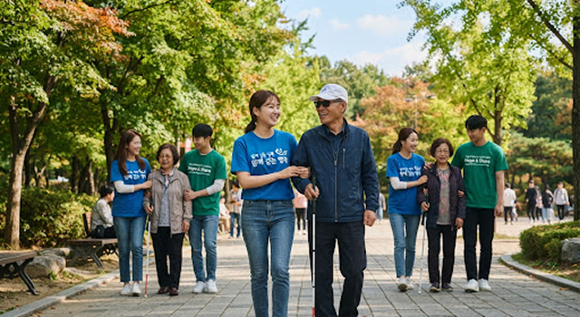
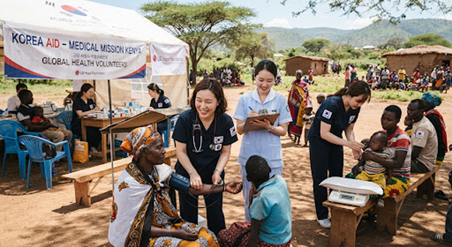
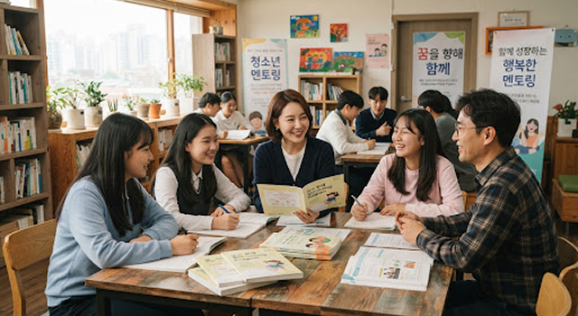
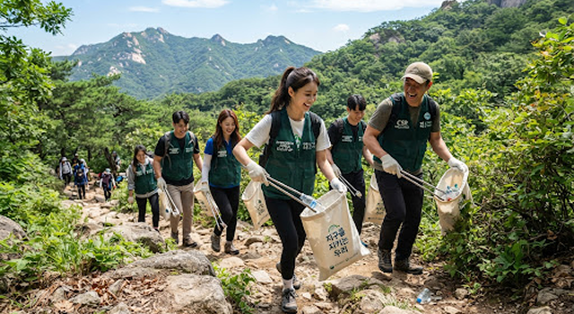

사회활동
사회활동
봉사활동소개Volunteer Activities
나눔과 실천으로 함께하는 일동제약
Voulnteer Programs일동제약 자원봉사 활동 프로그램
-

- VOL.01새빛맹인선교원
- 일동제약 그룹은 2005년부터 새빛맹인선교원을 지속적으로 후원하며 나눔을 이어오고 있으며, 매월 보행 지원과 영화 관람, 김장 봉사 등 다양한 봉사활동을 실천하고, 임직원 월급 적립금을 통한 후원으로 따뜻한 나눔을 이어가고 있습니다.
- 보행 지원
- 지속후원
- 김장 봉사
-

- VOL.02아프리카 케냐 의료 봉사활동
- 일동제약 그룹은 케냐 무하카 지역에서 무료 진료와 영양·위생교육 등을 지원하고, 생활 필수품 지원과 환경정화 활동으로 지역 주민의 건강과 생활환경 개선에 힘쓰며, 매칭그랜트 기금으로 ‘일동 도서관’을 설립해 나눔을 실천하고 있습니다.
- 케냐봉사
- 의료지원
- 도서관설립
-

- VOL.03그룹홈 사랑나눔
- 일동제약 안성공장과 청주공장은 자혜아동·도담다담 그룹홈을 매월 후원하며 나눔을 이어가고, 임직원 월급 적립금으로 아이들의 안정적인 생활과 성장을 지원하며, 아이들이 지역사회에 건강하게 적응할 수 있도록 힘쓰고 있습니다.
- 매월후원
- 급여적립
- 아동지원
-

- VOL.04아로나민 봉사단
- 아로나민 봉사단은 매년 봄·가을 등산철에 자연과 시민을 위한 환경정화 활동을 진행하며, 임직원들의 자발적인 참여로 전국의 명산과 시민공원 등에서 쓰레기 수거와 환경정화를 실천하고, 고객 사랑을 실천하는 공익 캠페인으로 꾸준히 이어가고 있습니다.
- 환경정화
- 자발참여
- 고객사랑